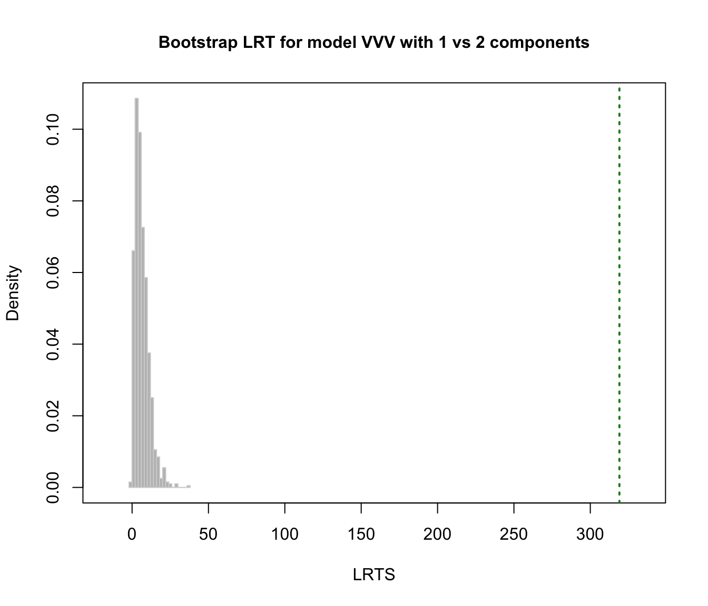
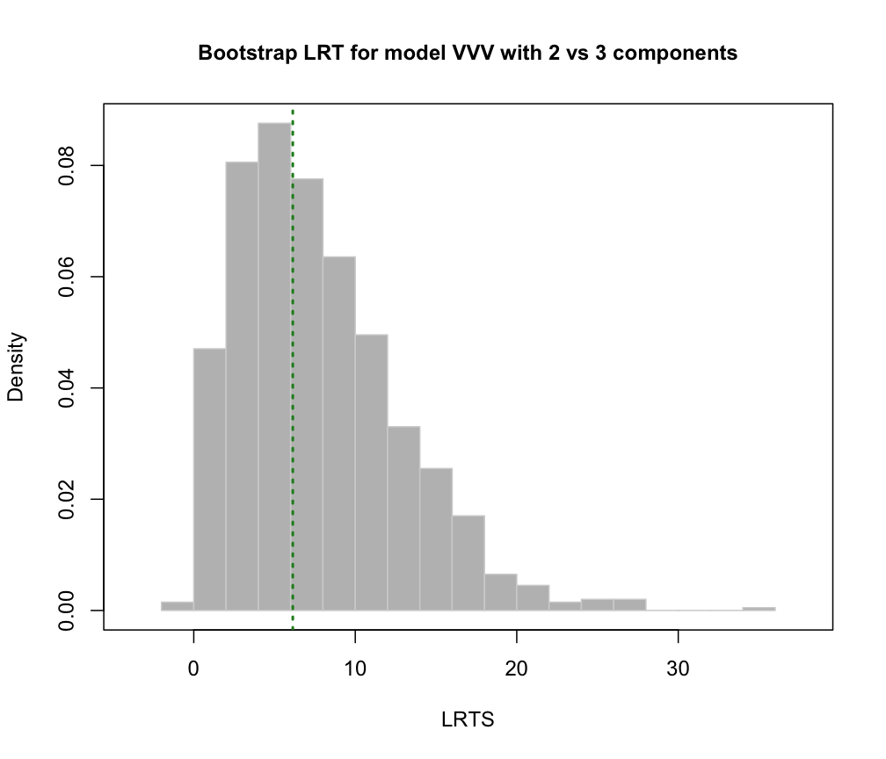

Bootstrap Likelihood Ratio Test for the Number of Mixture Components
mclustBootstrapLRT.RdPerform the likelihood ratio test (LRT) for assessing the number of mixture components in a specific finite mixture model parameterisation. The observed significance is approximated by using the (parametric) bootstrap for the likelihood ratio test statistic (LRTS).
Usage
mclustBootstrapLRT(data, modelName = NULL, nboot = 999, level = 0.05, maxG = NULL,
verbose = interactive(), ...)
# S3 method for mclustBootstrapLRT
print(x, ...)
# S3 method for mclustBootstrapLRT
plot(x, G = 1, hist.col = "grey", hist.border = "lightgrey", breaks = "Scott",
col = "forestgreen", lwd = 2, lty = 3, main = NULL, ...)Arguments
- data
A numeric vector, matrix, or data frame of observations. Categorical variables are not allowed. If a matrix or data frame, rows correspond to observations and columns correspond to variables.
- modelName
A character string indicating the mixture model to be fitted. The help file for
mclustModelNamesdescribes the available models.- nboot
The number of bootstrap replications to use (by default 999).
- level
The significance level to be used to terminate the sequential bootstrap procedure.
- maxG
The maximum number of mixture components \(G\) to test. If not provided the procedure is stopped when a test is not significant at the specified
level.- verbose
A logical controlling if a text progress bar is displayed during the bootstrap procedure. By default is
TRUEif the session is interactive, andFALSEotherwise.- ...
Further arguments passed to or from other methods. In particular, see the optional arguments in
mclustBIC.- x
An
'mclustBootstrapLRT'object.- G
A value specifying the number of components for which to plot the bootstrap distribution.
- hist.col
The colour to be used to fill the bars of the histogram.
- hist.border
The color of the border around the bars of the histogram.
- breaks
See the argument in function
hist.- col, lwd, lty
The color, line width and line type to be used to represent the observed LRT statistic.
- main
The title for the graph.
Details
The implemented algorithm for computing the LRT observed significance using the bootstrap is the following.
Let \(G_0\) be the number of mixture components under the null hypothesis versus \(G_1 = G_0+1\) under the alternative. Bootstrap samples are drawn by simulating data under the null hypothesis. Then, the p-value may be approximated using eq. (13) on McLachlan and Rathnayake (2014). Equivalently, using the notation of Davison and Hinkley (1997) it may be computed as
$$\textnormal{p-value} = \frac{1 + \#\{LRT^*_b \ge LRTS_{obs}\}}{B+1}$$
where
\(B\) = number of bootstrap samples
\(LRT_{obs}\) = LRTS computed on the observed data
\(LRT^*_b\) = LRTS computed on the \(b\)th bootstrap sample.
Value
An object of class 'mclustBootstrapLRT' with the following components:
- G
A vector of number of components tested under the null hypothesis.
- modelName
A character string specifying the mixture model as provided in the function call (see above).
- obs
The observed values of the LRTS.
- boot
A matrix of dimension
nbootx the number of components tested containing the bootstrap values of LRTS.- p.value
A vector of p-values.
References
Davison, A. and Hinkley, D. (1997) Bootstrap Methods and Their Applications. Cambridge University Press.
McLachlan G.J. (1987) On bootstrapping the likelihood ratio test statistic for the number of components in a normal mixture. Applied Statistics, 36, 318-324.
McLachlan, G.J. and Peel, D. (2000) Finite Mixture Models. Wiley.
McLachlan, G.J. and Rathnayake, S. (2014) On the number of components in a Gaussian mixture model. Wiley Interdisciplinary Reviews: Data Mining and Knowledge Discovery, 4(5), pp. 341-355.
Examples
# \donttest{
data(faithful)
faithful.boot = mclustBootstrapLRT(faithful, model = "VVV")
faithful.boot
#> -------------------------------------------------------------
#> Bootstrap sequential LRT for the number of mixture components
#> -------------------------------------------------------------
#> Model = VVV
#> Replications = 999
#> LRTS bootstrap p-value
#> 1 vs 2 319.065354 0.001
#> 2 vs 3 6.130516 0.560
plot(faithful.boot, G = 1)

plot(faithful.boot, G = 2)

# }